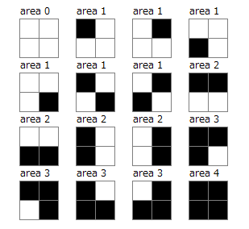

Consider a rectangle made up of $W \times H$ square cells each with area $1$.
Each cell is independently coloured black with probability $0.5$ otherwise white. Black cells sharing an edge are assumed to be connected.
Consider the maximum area of connected cells.
Define $E(W,H)$ to be the expected value of this maximum area. For example, $E(2,2)=1.875$, as illustrated below.

You are also given $E(4, 4) = 5.76487732$, rounded to $8$ decimal places.
Find $E(7, 7)$, rounded to $8$ decimal places.